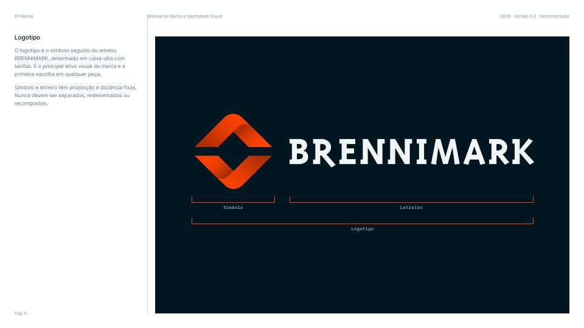
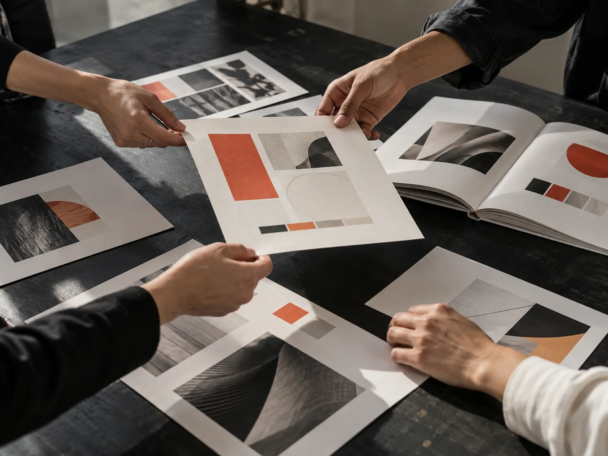

01Consultar
A regra, com a página de onde veio.
Pergunte ao Vini. Ele responde com a página do manual e diz quando não há diretriz documentada.
Uma marca, muitas mãos
Cada pessoa, ligada à referência certa.
Plataforma de gestão de marca
Menos tempo procurando, mais segurança para decidir e mais atenção para criar. O manual, os materiais e as orientações da marca num só lugar, com o Vini para ajudar durante o trabalho.
Ir direto para o Vini · para quem é · planos
O que é o Brennimark

Logotipo / Símbolo / Paleta
SVG · PNG · PDF · ASEO manual, os materiais
e as regras da sua marca,
num só lugar.

O problema
Cada pessoa leva a identidade adiante. E cada uma precisa, de novo, achar o logo em negativo, confirmar o laranja certo e descobrir que fonte usar, enquanto a resposta demora e a entrega se aproxima.
Do manual à próxima peça
01Consultar
Pergunte ao Vini. Ele responde com a página do manual e diz quando não há diretriz documentada.
02Criar
Revise a peça com as orientações da marca antes de enviar, e transforme a sua ideia num prompt alinhado a ela.
03Compartilhar
Logo, ícones e a fonte da marca num pacote, com a regra de uso de cada arquivo. Convide a equipe e os fornecedores sem pagar por pessoa.
Conheça Materiais da marcaUm fluxo de trabalho, não mais uma pasta.
A plataforma
Consulte diretrizes e encontre materiais sem depender de arquivos dispersos ou da memória de quem participou da criação.
O manual aparece exatamente como o estúdio diagramou. Nada é remontado.
Conheça o manual em PDFQual é a área de proteção?
É x, a altura do B do letreiro, nos quatro lados. Manual, p. 9
Estudo de interface com o manual do Brennimark, versão 0.2. Páginas e valores conferem com o manual.
Conheça o assistente
Um colega que entende de marca e está sempre por perto. Ele consulta o manual, os complementos aprovados e os materiais para ajudar você durante o trabalho. A decisão continua sendo sua.
Mora no canto de cada tela da marca. Chama quando precisar, e ele sai da frente quando você volta ao trabalho.
Vini · Consultar
Pergunte como perguntaria a um colega que conhece a marca. O Vini responde com a orientação e a página, e um clique na citação leva o manual até lá.
Quando o manual não trata do assunto, o Vini diz isso em vez de deduzir.
Conheça o Vini MaxQual é a área de proteção do símbolo?
É x nos quatro lados. No símbolo sozinho, x equivale a um terço da altura dele. Nenhum texto ou imagem entra nesse espaço.
Fonte: Manual do Brennimark · Área de proteção do símbolo · p. 10Posso aplicar o símbolo sobre uma foto?
O manual não trata do símbolo sobre fotografia. Existe um complemento sobre isso, ainda em rascunho, então ele não vale como regra. Vale confirmar com quem gere a marca.
Procurado em: Marca, p. 4–12 · Linguagem fotográfica, p. 24–26 · ComplementosVini · Analisar
Solte a imagem na janela do Vini. Ele compara a peça com as orientações documentadas, marca o que encontrou e mostra a página de cada uma. O que depende de medida real ou de julgamento fica para a sua revisão.
O Vini aponta. Quem aprova a peça continua sendo a equipe.
Conheça o Vini MaxA faixa usa #FF7A2F. A cor mais próxima da paleta é Brasa #FF4103.
#001621, dentro da paleta.
Verificação manual: depende do tamanho real da peça.
Área de proteção do símbolo · p. 10Verificação manual nesta versão.
Peça de exemplo, feita para esta demonstração com a marca do próprio Brennimark. As páginas citadas são do manual, versão 0.2.
Vini · Preparar
Você traz a ideia. O Vini acrescenta o que a marca documenta, com a fonte de cada linha: cores, luz, enquadramento e o que evitar. Você revisa, ajusta e usa na ferramenta de imagem da equipe.
Só orientação aprovada entra no prompt. O que ainda é rascunho fica à parte, identificado, e nunca se mistura ao resultado apresentado como aderente à marca.
Conheça Complementos e lacunasO seu pedido“Uma foto para o post de lançamento: alguém revisando o manual impresso numa mesa de estúdio.”
Fotografia para o Brennimark, formato 4:5. Cena mesa de estúdio; mãos revisando as pranchas impressas de um manual de marca. Gente trabalhando, sem posar. p. 24 Quadro de cima ou na altura da mesa, perto do trabalho, espaço livre p/ título. p. 25 Luz natural, lateral, de janela. Sombras frias; calor só nas luzes. p. 24 Cor sombras em Noite Polar #001621; um único ponto de Brasa #FF4103. p. 13 Evitar filtro de cor, duotone, sombras quentes, logo de marca real. p. 26
Fora do prompt · rascunho Grão de filme leve, proposto para Linguagem fotográfica. Ainda não aprovado, por isso não entra no prompt da marca. Explorar numa versão à parte, marcada como exploração
A ideia é sua; as orientações vêm do manual (edição de demonstração) · Cores, p. 13 · Linguagem fotográfica, p. 24–26
Marca viva
A marca evolui: surge uma dúvida, a agência escreve uma orientação, alguém aprova. A partir daí, todas as pessoas autorizadas consultam a versão atual, e o Vini passa a citá-la.
Ter acesso à orientação atualizada não significa que todas as peças já foram ajustadas. O Brennimark mostra o que vale agora; revisar o que já foi feito continua com a equipe.
Conheça Complementos e lacunasSímbolo sobre fotografiaA agência escreve a orientação que o manual não trazia.
20/09Quem gere a marca confere e aprova.
Para 12 pessoasBook, Materiais e Vini passam a mostrar a versão atual.
Para quem
Organize as marcas da carteira, receba freelancers e colaboradores novos e oriente fornecedores com a referência atualizada. Vale para a marca que o estúdio criou e para a que chegou pronta.
Para agências e estúdiosMantenha agências, fornecedores e equipes com a mesma referência: materiais atualizados, orientação acessível e menos dúvidas repetidas.
Para empresasDesigners independentes também assinam.
Quem usa
A pergunta que mais chegava no nosso WhatsApp era "qual é o laranja certo?". Hoje a equipe encontra a resposta com a página, e a gente volta a falar de ideia.
Entregamos a marca e ela continua trabalhando. O manual deixou de ser um arquivo que ninguém abre.
Mandar o kit para a gráfica com link que expira mudou nosso fim de tarde. E ela sempre recebe a versão atual.
Planos de assinatura
Para quem cuida de poucas marcas.
Para estúdios com carteira em crescimento.
Para agências com muitas marcas.
Para empresas e grupos com necessidades próprias.
Valores, limites e serviços incluídos estão sendo definidos com as primeiras agências. Por enquanto, a gente conversa sobre a sua carteira e monta a implantação junto. Uso do Vini acima do limite poderá ser contratado à parte.
Para falar do seu manual
Veja como o Brennimark ajuda sua equipe a levar essa ideia adiante, com consistência, em cada mão.
Uma marca é forjada com cuidado. E segue viva em cada trabalho.